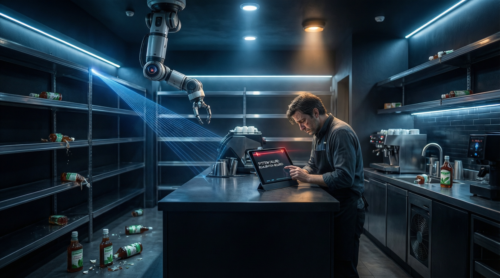

攜手 NomadGo 打造的自動化盤點系統，連薄荷糖漿都偵測不到 — 零售業 AI 落地的慘痛一課

Starbucks 已正式終止一款 AI 庫存盤點工具，僅僅 九個月就放棄了這項被寄予厚望的自動化技術。該工具由 CEO Brian Niccol 推動作為「回歸星巴克」重整計劃的一部分，旨在解決門市長期存在的庫存短缺問題，卻因表現不佳而被迫腰斬。
這款名為「Automated Counting」的軟件於 2025 年 9 月向北美門市推廣，與 AI 公司 NomadGo 合作，宣稱結合 3D 空間感知、電腦視覺和擴增實境技術。然而在實際部署中，系統連最基本的功能都無法正確執行——員工掃描貨架時，系統竟然漏掉了一瓶薄荷糖漿。
這次失敗並非單一因素造成，而是多重問題疊加的結果：
此事件再次顯示 AI 在實體零售場景的落地挑戰：理論上的可行性不等於實際執行的效果。NomadGo 宣稱的「革命性」技術，在實驗室環境中或許完美，但在真實門市卻連一瓶薄荷糖漿都抓不到。這對零售業的 AI 採用策略具有重要的警示意義：先小規模試點驗證，再大規模推廣，纔是負責任的 AI 部署方式。
結合 3D 空間感知、電腦視覺和擴增實境的庫存偵測系統，理論領先但落地失敗。
員工使用手持裝置掃描貨架，理論上可自動化繁瑣的庫存盤點流程。
工具專注於盤點牛奶、糖漿等飲料原料——這些正是門市最常缺貨的商品。
2025 年 9 月推廣，2026 年 5 月 19 日當週正式停用，生命週期不到一年。
| 維度 | AI 自動化盤點 | 手動盤點 | Starbucks 結果 | 教訓 |
|---|---|---|---|---|
| 部署速度 | 快速推廣 | 需培訓所有員工 | 九個月後終止 | ❌ 速度不等於品質 |
| 準確度 | 理論高但實際低 | 依賴員工細心程度 | 連糖漿都偵測不到 | ❌ 實驗室 ≠ реаль門市 |
| 員工接受度 | 低（擔心被取代） | 中等 | 「感謝取消！」 | ❌ 技術接受度關鍵 |
| 成本效益 | 前期投入高 | 持續人力成本 | 宣告失敗 | ❌ 需驗證再推廣 |
| 擴展性 | 理論上可快速複製 | 需逐店培訓 | 北美門市全部停用 | ✅ 小規模試點優先 |
「感謝取消自動盤點！想法很好，但執行起來太困難了。」
— Starbucks 員工內部回饋Starbucks 的失敗並不意味著 AI 在零售庫存管理的終結，但確實顯示出過度依賴未成熟技術的風險。未來零售業的 AI 採用可能會更加謹慎——先在少數門市進行長期試點，驗證效果後再逐步推廣。
此外，這次事件也揭示了「技術叛逆」現象：員工對 AI 工具的懷疑態度並非單純的守舊，而往往是基於對工具實際表現的觀察。尊重一線員工的反饋，可能是 AI 落地成功與否的關鍵因素之一。
對於其他正在考慮部署 AI 的零售企業而言，Starbucks 的故事提供了一個寶貴的案例：不要讓 CEO 的願景掩蓋了技術執行的現實。